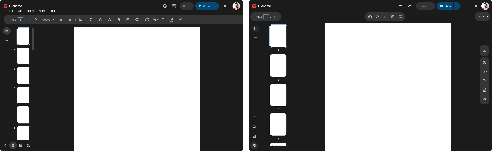
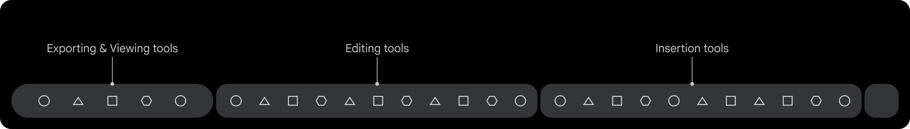
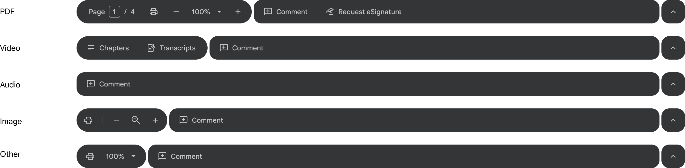
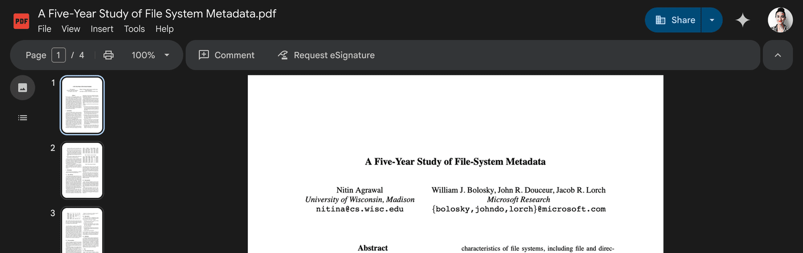
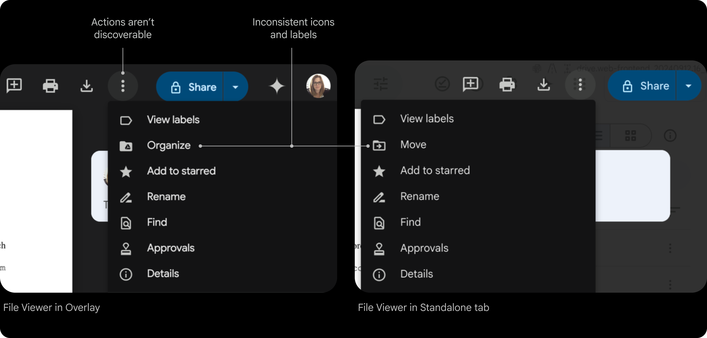
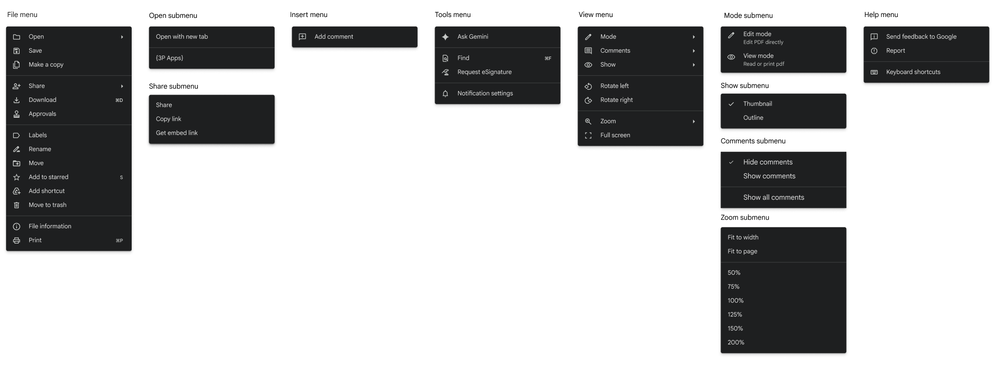
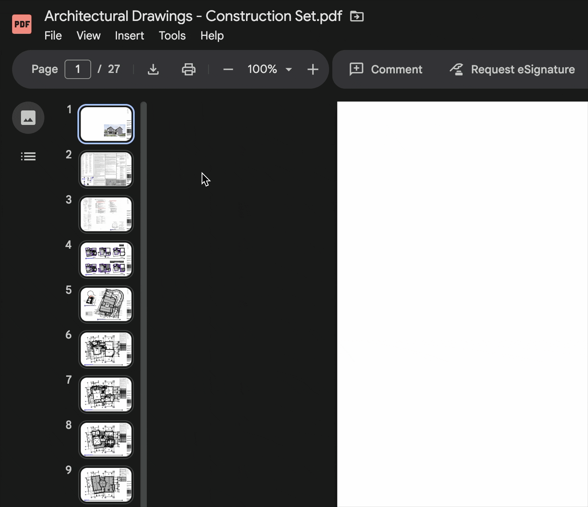

Context
Improving PDF and Video consumption became a core pillar of Drive's 2025 strategy, with a focus on delivering a first-class experience. The goal was to make Drive the platform of choice for PDF workflows—eliminating the need for third-party tools and enabling users to work more efficiently within a single ecosystem.
While Workspace is best known for its native Editors, user behavior told a different story:
- PDFs and Images are the top consumed file types in Workspace
- 1.7B weekly views across Drive
Despite their importance, the PDF, Video, and Images experience had remained largely unchanged for years.
- Users frequently had to leave Drive to fill forms, annotate, or edit PDFs
- Navigating PDFs and Video is complex
- Fragmented workflows created friction and exposed competitive gaps with specialized tools
Led a multi-year modernization roadmap focused on closing the competitive gap and elevating the PDF, Video, and Image experience:
- Viewing improvements
- PDF Form filling
- Editing and annotation
- Navigation
Process
To accommodate a rapidly expanding roadmap, I designed a scalable information architecture framework. This system ensured new features could integrate seamlessly without disrupting the core user experience as the product evolved.
Defined taxonomy into categories and insert tools with a team card-sorting exercise.
-
Navigation
- Table of content
- Thumbnail preview
- Find in document
- Page number
-
Executive actions
- Undo
- Zoom
- Insert pages
- Rotate pages
- Layout
-
Insert
- Text
- Signature
- Shape
- Lines
- Highlight
- Add comment
- Free hand markup
- Select annotation
-
Collaboration
- Add comment
-
GenAI
- Sidekick
-
File actions
- Download
- Save
- Share
- Comments
-
Text
- Font
- Size
- Bold
- Italic
- Underline
- Strikethrough
- Paragraph
- Color
-
Signature
- Signature
- Initials
-
Shape
- Shape
- Color
-
Line
- Thickness
- Color
-
Highlight
- Color
-
Free hand markup
- Line type
- Color
Leveraging Workspace precedents for navigation and collaboration; focusing design optimization strictly on viewing and markup toolbar positioning.
I organized an information architecture alignment session with the Google Slides team, who were also updating their IA, to define a unified Workspace strategy. We explored two directions:
- Align with Editors to ensure cross-product consistency (Moved forward with this direction)
- Create a new system for third-party files using modern Google Material 3 patterns
While I felt the Editor toolbar was dense and dated, leadership chose alignment with Editors for cross-product consistency.
Option 1 - Align with Editors
Option 2 - Create a new system

Defined Principles
Established guiding principles to inform product decisions, align cross-functional teams, and ensure a consistent experience. These principles created a shared framework for evaluating tradeoffs, prioritizing features, and maintaining a cohesive user experience as the product evolved.
Scalable
A flexible system that scales across other Drive Viewing file types and won't break with new features
Progressive
Reveal options as the user dives deeper into workflows
Contextual
Lean on AI to provide contextual nudges that allow the user to shortcut cumbersome tasks
Familiar
It feels like an Editor so I don't have to think or relearn new patterns
Two-part system
Toolbar Designs
While building on the Editors toolbar pattern, I evolved it to align with Google Material 3's updated shape and toolbar guidelines, improving visual clarity and scannability. Partnering with Video and eSignature UX leads, I also drove design convergence across tools into a standardized system aligned with the Workspace design system and familiar user mental models.

Short-term toolbar

Long-term toolbar

In context

File Menus
- Actions aren't easily discoverable
- Missing features, like Make a copy
- Menus inconsistent across Overlay and Standalone file viewer

Conducted a comprehensive audit of the File menu to identify inconsistencies across surfaces and file types, then established a unified taxonomy aligned with Editors — standardizing groupings, iconography, and keyboard shortcuts for a more predictable experience.

The Editors recently updated their file menus. To keep navigation familiar, we aligned with their IA, language, and icons.
File Menu Designs


Landing metrics
Launched 14 features to close the competitive gap and established unified navigation framework across Drive's file view—impacts 1.7 billion weekly views.
- 20% increase in CSAT: 74%
- 7% decrease in DSAT: 12%
What I learned
Defining clear product principles helped the team move faster and make more consistent decisions. They provided a shared framework for evaluating tradeoffs and kept design and engineering aligned as we delivered a large set of foundational features.
This work reinforced that even when building standard capabilities, maintaining alignment across teams requires ongoing leadership and clarity of vision.